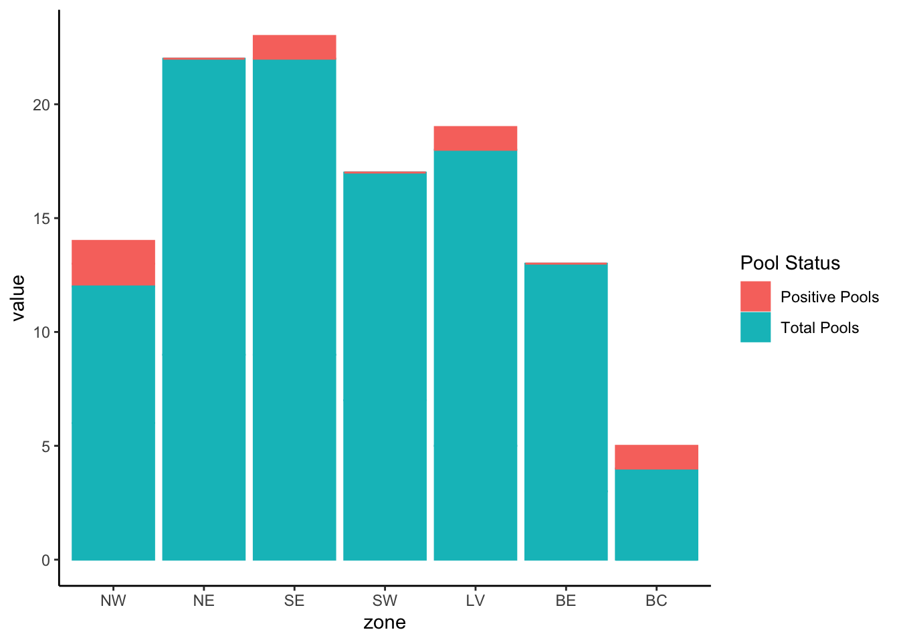
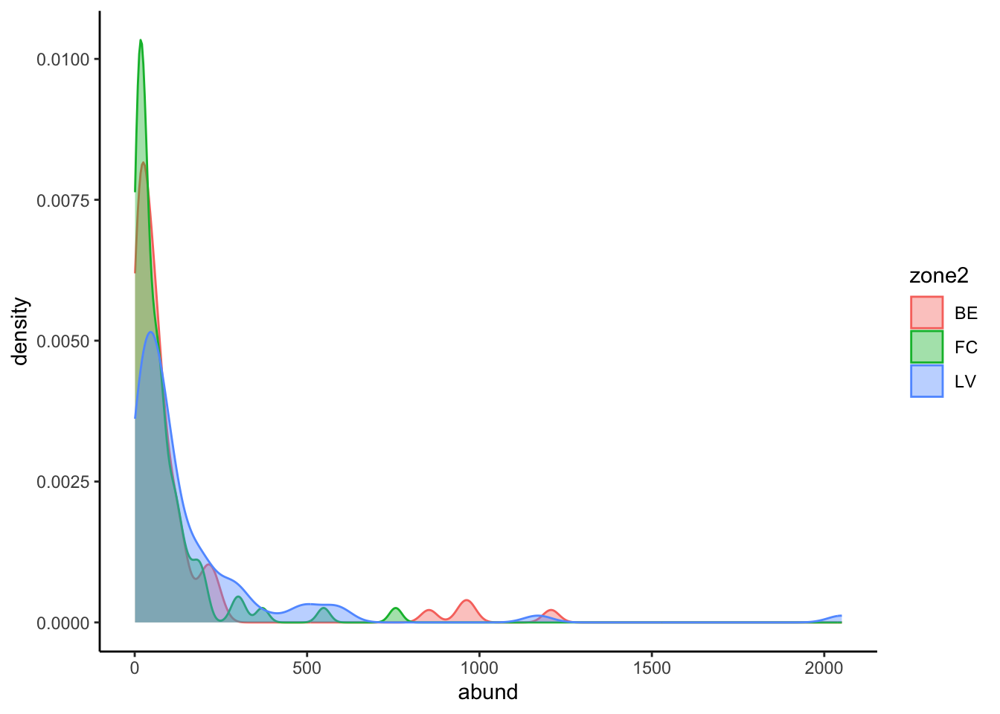

Rscript config/config_weekly.R --input w26 --year 2025 --year_hx 2019 --week 26 --cp_threshold 500 --update T --clean F # first arg is year second is week#add input dir arg #allows to easily run diff input folders
Input folder set to: w26
Week filter set to: 26
Year filter set to: 2025
Copy threshold set to: 500
Fluorescent threshold set to: 34000
VI threshold set to: 0.75
Update directory set to: TRUE
Clean directory set to: FALSE
[1] "All required directories exist."
[1] "All required directories are populated."
DESC: loads in packages | | loads user functions | | loads config file
rm(list =ls())getwd()source("config/load_packages.R")utils =list.files(path ="utils",pattern ="*.R",full.names = T)purrr::walk(utils, source)#get the most recent configuration for the run from the output of running config_weekly.Rread_latest("config/config_weekly_settings")
#git commit -a -m "weekly commit before data removal"#git push
fn_func_trap: data_mid/functional_traps.csv *to be added
data_output:
fn_database_output
unmatched traps
description:
checks to ensure traps match existing list
pulls database
merges datasheet pcr and platemap data
makes archive copy of database
merges new data with database
pushes changes from new data to database to googledrive
Code Below: -data_input
————– CLEAN APP SPECIES (TRAP) DATA ————————————–
DESC:
DEPENDENCIES:
INPUT:
OUTPUT:
————– COMPLETE TRAP DATA —————————————————–
DESC:
DEPENDENCIES:
INPUT:
OUTPUT:
————– CALC POOLS—————————————————–
Code Below: - data input: database_update (weekly data from surveillance) - data_input
————–PLOT POOLS—————————————————–
p_pools <-plot_pools(pools)p_pools

ggsave(paste0(dir_plot_wk, "pools.png"), p_pools, height =8, width =12, units ="in")
————– CALC ZONE STATS —————————————————–
————– PLOT ZONE STATS HIST —————————————————–
hx %>%filter(spp =="All"& zone %in%c("BE", "LV", "FC")) %>%ggplot(aes(abund, color = zone2, fill = zone2)) +geom_density(alpha =0.4, position ="identity") +theme_classic()

hx %>%filter(spp =="All"& zone %in%c("BE", "LV", "FC")) %>%ggplot(aes(vi, color = zone2, fill = zone2)) +geom_density(alpha =0.4, position ="identity") +theme_classic()
fn_p_hx =paste0(dir_plot_wk, "hx_plot_all.png")ggsave(fn_p_hx, p_hx_current0, height =8, width =12, units ="in")# Upload a single file to a specific folderdrive_upload(media = fn_p_hx,path =as_id(key_plots_dir), # Replace with your folder IDname ="new_filename.csv"# Optional: specify a new name)
Before generating tables and report make sure all the stuff is correct